Xin chào, tôi là Nguyễn Viết Huy
Kỹ thuật Robot, ĐH Công nghệ (ĐHQGHN) — Cấu trúc dữ liệu & Tư duy hệ thống
Thông tin cá nhân
Họ và Tên
Nguyễn Viết Huy
Ngành học & Trường
Kỹ thuật Robot, ĐH Công nghệ (UET) - ĐHQGHN
25023609@vnu.edu.vn
Môn học
Nhập môn Công nghệ số và Ứng dụng AI
Sở thích cá nhân
Tôi là người dung hòa được tư duy logic của một sinh viên kỹ thuật và tinh thần sáng tạo nghệ thuật. Đam mê cốt lõi của tôi nằm ở việc khám phá các thiết bị điện tử, nghiên cứu chuyên sâu về robot, vi điều khiển (như Arduino) và thiết kế cơ khí trên AutoCAD. Song song với tình yêu dành cho khoa học ứng dụng, tôi chọn cách cân bằng nhịp sống thông qua việc quản lý nội dung cộng đồng trực tuyến và sở thích nấu ăn. Những hoạt động này không chỉ giúp tôi thư giãn mà còn là nguồn cảm hứng tươi mới mỗi ngày.
Mục tiêu học tập & Phát triển cá nhân
Thông qua môn học này, tôi hướng đến việc thành thạo các kỹ năng số thiết yếu và phương pháp tổ chức dữ liệu thông minh, kết hợp sử dụng hiệu quả các công cụ AI để tối ưu hóa hiệu suất học tập trên giảng đường. Đặc biệt, tôi tập trung ứng dụng những kỹ năng này vào việc tra cứu tài liệu chuyên ngữ và nghiên cứu chuyên sâu các công nghệ mới trong lĩnh vực Robotics.
Mục tiêu của Portfolio này
Portfolio này là nơi lưu trữ, hệ thống hóa và số hóa toàn bộ quá trình học tập, thực hành của tôi trong học kỳ. Mục tiêu của không gian này là giúp tôi dễ dàng đánh giá tiến trình phát triển kỹ năng số và năng lực kỹ thuật của bản thân, từ những thao tác hệ điều hành căn bản cho đến các kỹ năng phân tích dữ liệu và nghiên cứu chuyên sâu phục vụ cho chuyên ngành.
Dự án & Bài tập
Chọn một nhiệm vụ bên trái để xem chi tiết tiến trình thực hiện.
1 Quản lý tệp và thư mục cơ bản
Rèn luyện kỹ năng tạo, đổi tên, sao chép, di chuyển, xóa tệp tin và thư mục một cách thành thạo trên hệ điều hành Windows.
Quy trình thực hành chi tiết
Nhấn tổ hợp phím Windows + E hoặc nhấp vào biểu tượng thư mục màu vàng trên thanh tác vụ.
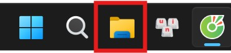
Ở cột bên trái, nhấp vào This PC, sau đó nhấp đúp vào một ổ đĩa không phải ổ hệ thống (ví dụ: ổ D: hoặc E:). Nếu chỉ có ổ C:, hãy vào thư mục Documents.
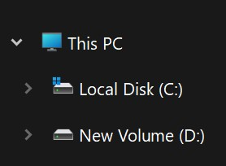
Nhấp chuột phải vào một khoảng trống -> chọn New -> Folder. Đặt tên thư mục là ThucHanh_NguyenVietHuy. Nhấn Enter.
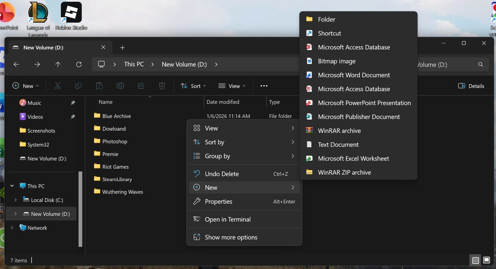
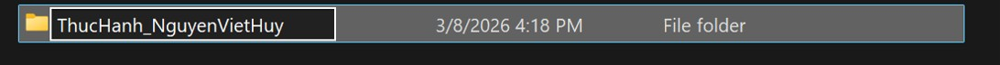
Nhấp đúp vào thư mục ThucHanh_NguyenVietHuy.
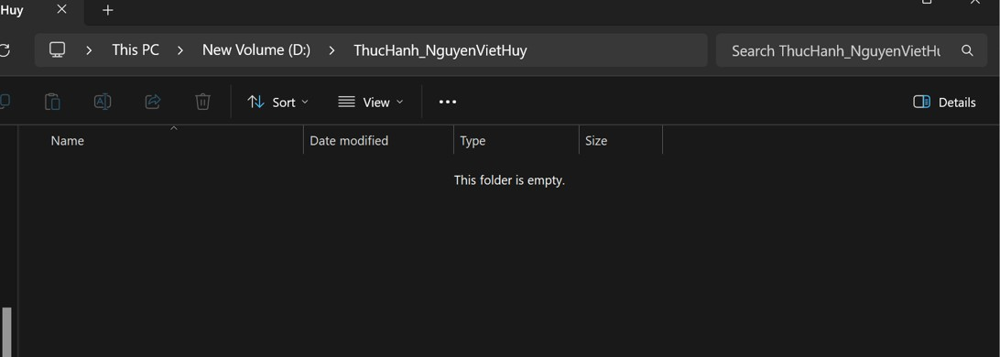
Nhấp chuột phải vào khoảng trống -> New -> Text Document. Đặt tên là Ghi Chu.txt. Nhấn Enter.
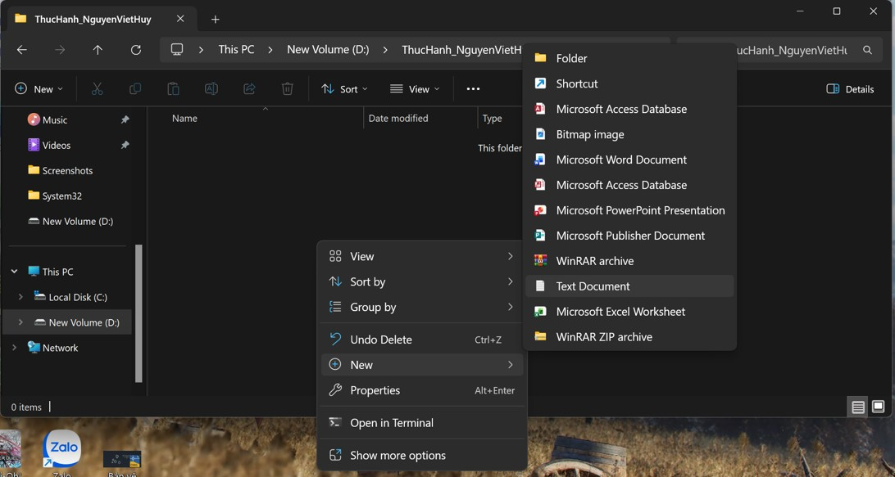
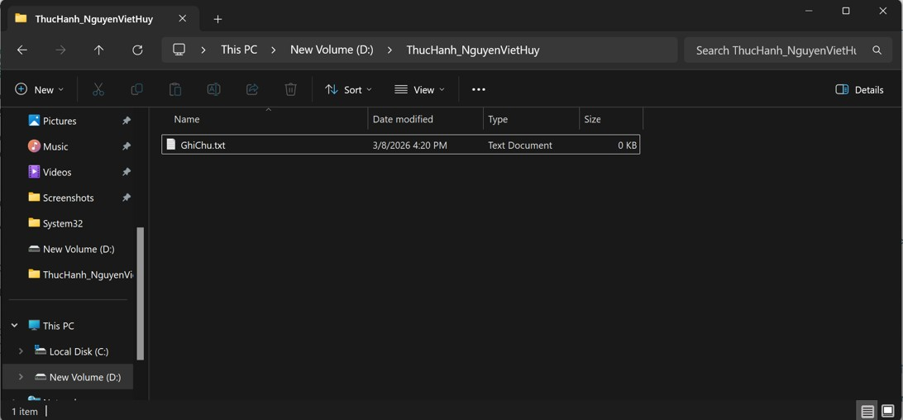
Nhấp chuột phải vào tệp Ghi Chu.txt -> chọn Rename. Đổi tên thành GhiChu Quan Trong.txt. Nhấn Enter.
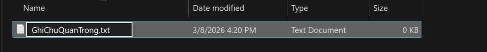
Trong thư mục ThucHanh_NguyenVietHuy, nhấp chuột phải -> New -> Folder. Đặt tên là TaiLieu.
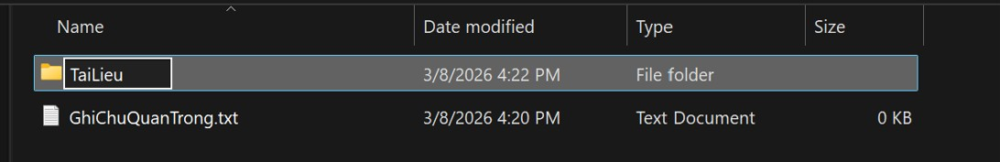
Nhấp chuột phải vào tệp Ghi Chu Quan Trong.txt -> chọn Copy (hoặc chọn tệp rồi nhấn Ctrl + C). Nhấp đúp vào thư mục TaiLieu, nhấp chuột phải vào khoảng trống bên trong -> chọn Paste (hoặc nhấn Ctrl + V). Bây giờ bạn có một bản sao của tệp trong thư mục TaiLieu.
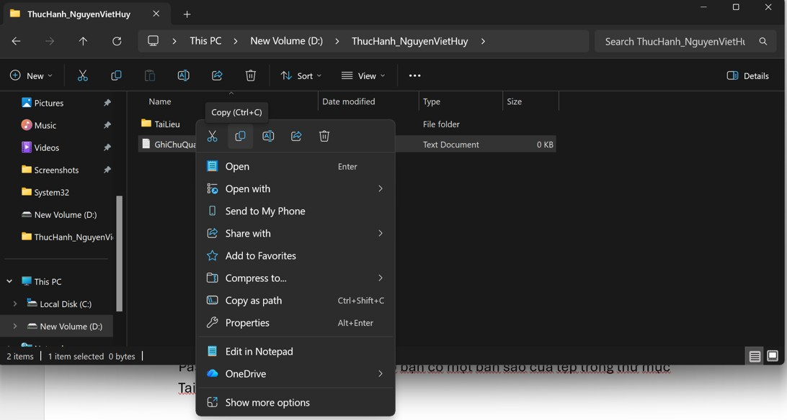
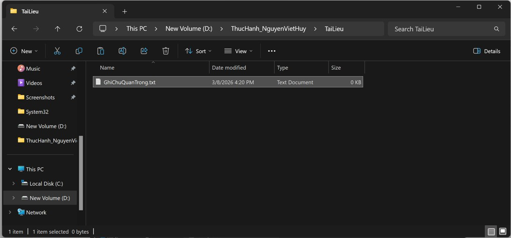
Quay lại thư mục ThucHanh_NguyenVietHuy. Tạo một tệp mới tên là DiChuyen.txt. Nhấp chuột phải vào tệp DiChuyen.txt -> chọn Cut (hoặc chọn tệp rồi nhấn Ctrl + X). Nhấp đúp vào thư mục TaiLieu, nhấp chuột phải vào khoảng trống -> chọn Paste (hoặc nhấn Ctrl+V). Tệp gốc đã biến mất khỏi vị trí cũ và chỉ còn ở vị trí mới.
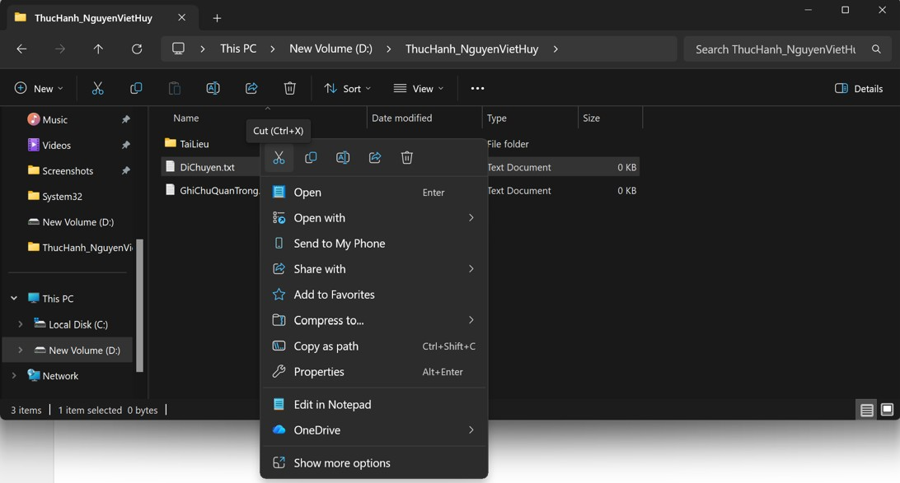
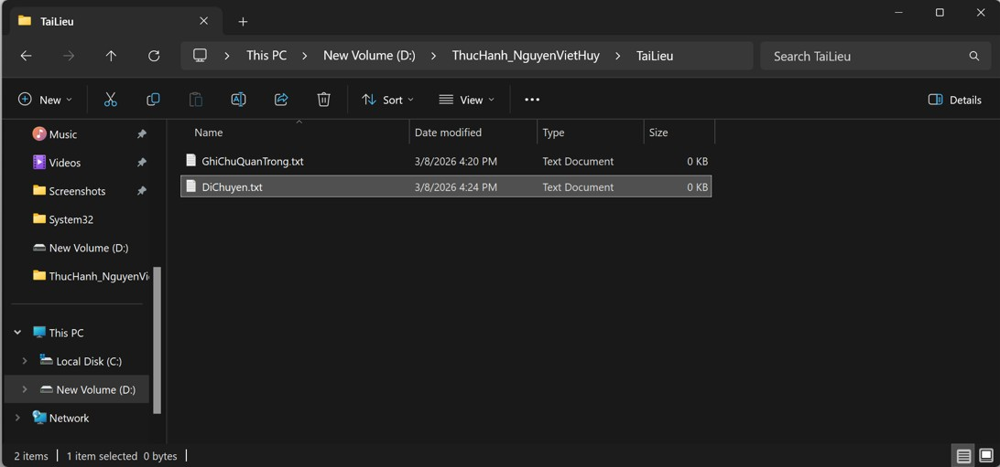
Trong thư mục TaiLieu, nhấp chuột phải vào tệp Ghi Chu QuanTrong.txt -> chọn Delete. Tệp sẽ được chuyển vào Thùng rác (Recycle Bin).
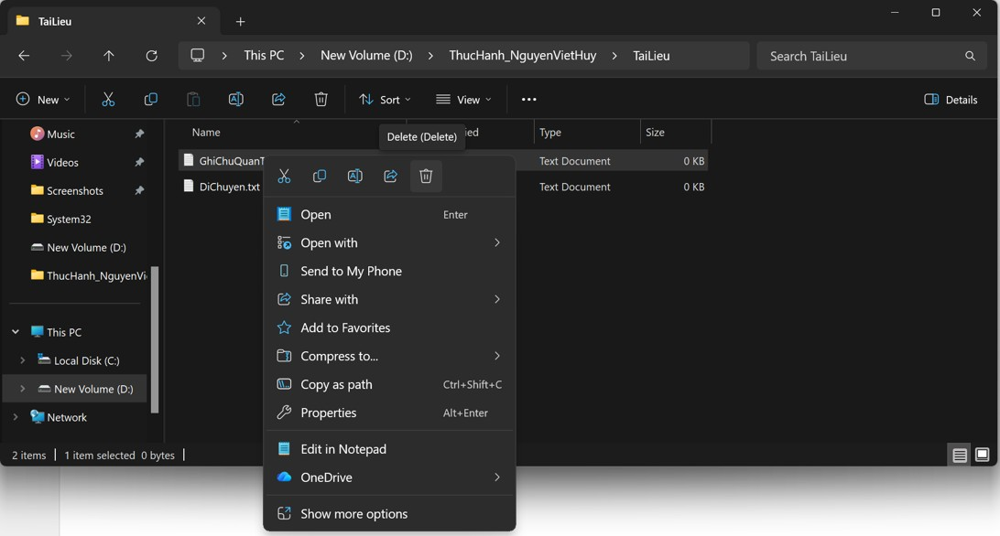
Chọn tệp DiChuyen.txt, nhấn giữ phím Shift và nhấn phím Delete. Một cảnh báo sẽ hiện ra. Nếu đồng ý, tệp sẽ bị xóa vĩnh viễn mà không qua Thùng rác.
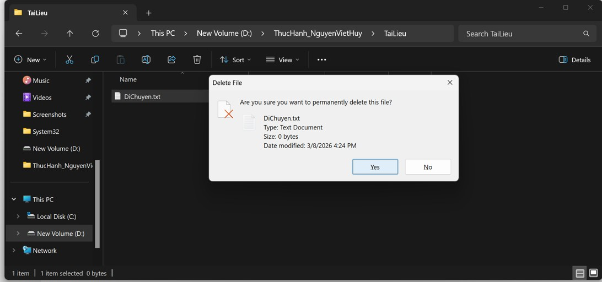
Tìm biểu tượng Recycle Bin trên màn hình nền, nhấp đúp để mở. Tìm tệp GhiChuQuanTrong.txt đã xóa, nhấp chuột phải vào nó và chọn Restore. Tệp sẽ quay trở lại vị trí ban đầu.
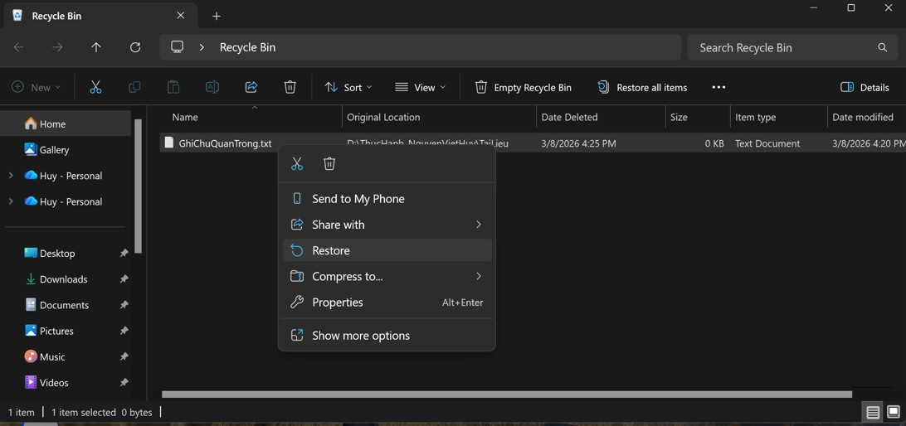
2 Tìm kiếm và đánh giá thông tin học thuật
1. Giới thiệu chủ đề
Ngành kỹ thuật robot đang phát triển mạnh mẽ và được ứng dụng rộng rãi trong công nghiệp, y tế, logistics và đời sống. Một trong những hướng nghiên cứu quan trọng hiện nay là ứng dụng trí tuệ nhân tạo (AI) trong robot tự hành. Robot tự hành có khả năng cảm nhận môi trường, xử lý thông tin và đưa ra quyết định mà không cần sự điều khiển trực tiếp của con người.
Phạm vi tìm kiếm tập trung vào:
- Các thuật toán AI cho robot (Machine Learning, Deep Learning).
- Robot tự hành trong môi trường thực tế.
- Hệ thống cảm biến và xử lý dữ liệu của robot.
Thông tin được thu thập từ nhiều nguồn khác nhau như Google Scholar, các tạp chí khoa học, sách chuyên khảo và các nguồn mở trên internet.
2. Phương pháp tìm kiếm thông tin
Việc tìm kiếm thông tin được thực hiện thông qua các cơ sở dữ liệu học thuật và nguồn đáng tin cậy.
- Google Scholar
- IEEE Xplore
- SpringerLink
- ScienceDirect
- Autonomous robot
- AI in robotics
- Machine learning for robotics
- Robot perception & Autonomous navigation
Sau quá trình tìm kiếm và sàng lọc, tổng cộng 10 tài liệu tham khảo đã được lựa chọn, trong đó có ít nhất 5 bài báo khoa học.
3. Bảng tổng hợp và đánh giá nguồn thông tin
| STT | Tài liệu | Loại nguồn | Tác giả / NXB - Năm | Độ tin cậy |
|---|---|---|---|---|
| 1 | Probabilistic Robotics | Sách | Thrun, Burgard, Fox / MIT Press (2005) | Rất cao |
| 2 | Deep Learning for Robotics | Bài báo khoa học | Levine et al. - IEEE (2016) | Rất cao |
| 3 | Autonomous Robots: From Biological Inspiration... | Sách | Bekey - MIT Press (2005) | Cao |
| 4 | Machine Learning in Robotics: A Review | Bài báo khoa học | Kober et al. (2013) | Rất cao |
| 5 | Visual Navigation for Autonomous Robots | Bài báo khoa học | Chen et al. (2019) | Cao |
| 6 | Introduction to Autonomous Mobile Robots | Sách | Siegwart, Nourbakhsh (2011) | Rất cao |
| 7 | Robot Operating System (ROS) Documentation | Internet | Open Robotics (2023) | Cao |
| 8 | IEEE Robotics and Automation Magazine | Tạp chí | IEEE (2020) | Rất cao |
| 9 | Robotics: Modelling, Planning and Control | Sách | Siciliano et al. (2009) | Rất cao |
| 10 | Autonomous Navigation Using Deep Reinforcement Learning | Bài báo khoa học | Tai et al. (2017) | Cao |
4. Đánh giá độ tin cậy của các nguồn
Việc đánh giá độ tin cậy của các nguồn được thực hiện dựa trên các tiêu chí sau:
- 4.1 Tác giả: Phần lớn tài liệu được viết bởi các nhà nghiên cứu và giáo sư trong lĩnh vực robot và AI. Ví dụ: Sebastian Thrun – chuyên gia robot nổi tiếng tại Stanford, Bruno Siciliano – nhà nghiên cứu hàng đầu về robot. Điều này giúp đảm bảo tính học thuật và độ tin cậy cao.
- 4.2 Nhà xuất bản / tạp chí: Nhiều tài liệu được xuất bản bởi các tổ chức khoa học uy tín như IEEE, MIT Press, Springer, Elsevier. Các tổ chức này có quy trình phản biện khoa học (peer review) nghiêm ngặt.
- 4.3 Phương pháp nghiên cứu: Các bài báo khoa học thường sử dụng thí nghiệm robot thực tế, mô phỏng bằng phần mềm và phân tích thuật toán. Nhờ đó kết quả nghiên cứu có tính khoa học và khả năng kiểm chứng cao.
- 4.4 Số lượng trích dẫn: Một số tài liệu có số lượng trích dẫn rất lớn trên Google Scholar, ví dụ: Probabilistic Robotics: hơn 20,000 trích dẫn; Machine Learning in Robotics: hàng nghìn trích dẫn. Điều này cho thấy sự ảnh hưởng lớn trong cộng đồng nghiên cứu.
- 4.5 Tính cập nhật: Ngoài các tài liệu nền tảng, báo cáo cũng sử dụng các nghiên cứu gần đây (2017-2023) để đảm bảo tính cập nhật của thông tin.
5. Nhận xét và kết luận
Qua quá trình tìm kiếm và đánh giá thông tin, có thể thấy rằng các cơ sở dữ liệu học thuật như Google Scholar, IEEE Xplore và ScienceDirect là những nguồn rất quan trọng đối với sinh viên kỹ thuật. Những nguồn này cung cấp các bài báo khoa học chất lượng cao, sách chuyên khảo chuyên sâu và thông tin được kiểm chứng bởi cộng đồng khoa học.
Đối với ngành kỹ thuật robot, việc sử dụng các nguồn học thuật giúp sinh viên tiếp cận với những công nghệ mới như AI, học máy và robot tự hành. Ngoài ra, quá trình thực hiện bài tập cũng giúp rèn luyện các kỹ năng quan trọng:
- Kỹ năng tìm kiếm tài liệu khoa học
- Kỹ năng đánh giá độ tin cậy của nguồn
- Kỹ năng tổng hợp và trích dẫn tài liệu
Những kỹ năng này rất cần thiết cho việc học tập và nghiên cứu trong lĩnh vực kỹ thuật robot.
6. Danh mục tài liệu tham khảo (Harvard)
[2] Chen, Z. et al. (2019) 'Visual Navigation for Autonomous Robots', IEEE Transactions on Robotics.
[3] Kober, J., Bagnell, J. and Peters, J. (2013) 'Reinforcement Learning in Robotics', International Journal of Robotics Research.
[4] Levine, S. et al. (2016) 'End-to-End Training of Deep Visuomotor Policies', Journal of Machine Learning Research.
[5] Siciliano, B. et al. (2009) Robotics: Modelling, Planning and Control. Springer.
[6] Siegwart, R., Nourbakhsh, I. (2011) Introduction to Autonomous Mobile Robots. MIT Press.
[7] Tai, L., Paolo, G. and Liu, M. (2017) 'Virtual-to-Real Deep Reinforcement Learning', IEEE International Conference on Intelligent Robots and Systems.
[8] Thrun, S., Burgard, W., Fox, D. (2005) Probabilistic Robotics. MIT Press.
[9] IEEE Robotics and Automation Magazine (2020). IEEE.
[10] Open Robotics (2023) Robot Operating System Documentation. Available at: https://www.ros.org
3 Viết Prompt hiệu quả cho các tác vụ học tập(Prompt Engineering)
Bài tập nhằm phát triển kỹ năng viết prompt hiệu quả để tận dụng tối đa khả năng của các mô hình ngôn ngữ lớn (AI) trong học tập. Thông qua việc thiết kế, thử nghiệm và so sánh các phiên bản prompt, người học sẽ hiểu được tác động của cấu trúc prompt đến chất lượng đầu ra.
I. Lựa chọn và Phân tích tác vụ học tập
| Tác vụ | Mục tiêu & Thách thức | Phân tích bản chất |
|---|---|---|
| 1. Tóm tắt tài liệu học thuật | Chuyển đổi một khối lượng kiến thức lớn thành các ý chính mà không làm mất đi tính logic=. | Cần khả năng trích xuất (extraction) và tổng hợp (synthesis) thông tin theo phân cấp. |
| 2. Giải thích khái niệm phức tạp | Làm đơn giản hóa các định nghĩa trừu tượng (như SVD trong Đại số) để dễ hiểu nhưng vẫn chính xác. | Đòi hỏi kỹ thuật sử dụng phép ẩn dụ (metaphor) và điều chỉnh trình độ ngôn ngữ phù hợp với người học. |
| 3. Tạo bộ câu hỏi ôn tập | Tạo ra các câu hỏi đánh giá được khả năng vận dụng thay vì chỉ nhớ máy móc. | Cần tư duy phản biện để thiết kế các tình huống có vấn đề (problem-based) và đáp án có tính phân loại. |
II. Xây dựng các phiên bản Prompt
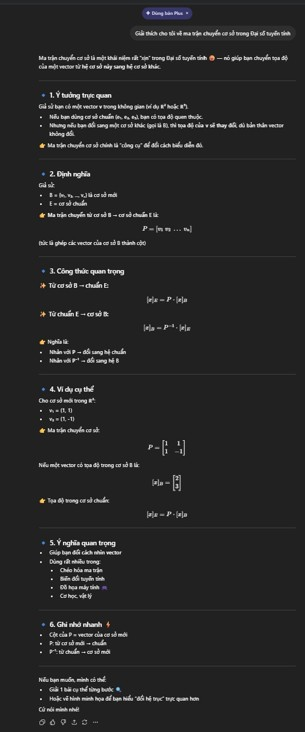
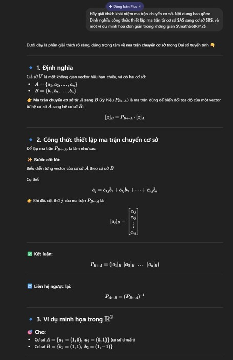
Task: "Hãy giải thích khái niệm Ma trận chuyển cơ sở cho một sinh viên năm nhất đang cảm thấy bối rối."
Constraint & Technique (Chain-of-Thought):
1. Hãy bắt đầu bằng một ví dụ thực tế (như việc thay đổi đơn vị đo lường hoặc góc nhìn trong bản đồ).
2. Sau đó, hãy dẫn dắt công thức P một cách logic.
3. Cuối cùng, hãy đưa ra một 'mẹo' để ghi nhớ chiều chuyển từ cơ sở cũ sang cơ sở mới không bị nhầm lẫn.
Few-shot Example: "Giống như việc bạn đang nói tiếng Anh và muốn chuyển sang tiếng Việt, ma trận chuyển cơ sở đóng vai trò là một người thông dịch viên giúp các con số giữ nguyên ý nghĩa trong một 'ngôn ngữ' (cơ sở) mới."
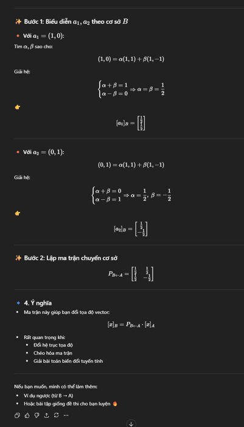
III. Thử nghiệm và So sánh kết quả
| Tiêu chí | Prompt Cơ bản | Prompt Cải tiến | Prompt Nâng cao |
|---|---|---|---|
| Độ chính xác | Đúng lý thuyết nhưng khô khan. | Đầy đủ cấu trúc. | Rất sâu sắc, dễ hiểu. |
| Khả năng ứng dụng | Khó hình dung cách dùng. | Có thể dùng để làm bài tập. | Giúp hiểu bản chất và nhớ lâu. |
| Sự khác biệt (Nuance) | Trả lời như từ điển. | Có tính sư phạm hơn. | Sắc thái cá nhân hóa cao, kết nối lý thuyết và trực giác. |
IV. Phân tích hiệu quả
Sự vượt trội của Prompt Nâng cao đến từ việc áp dụng các kỹ thuật cốt lõi:
- Thiết lập Ngữ cảnh (Role) giúp AI giới hạn phạm vi kiến thức phù hợp, tránh đưa ra các công thức quá hàn lâm không cần thiết.
- Sử dụng Chuỗi tư duy (CoT) buộc AI phải suy luận từng bước, từ thực tế dẫn dắt đến công thức, tránh việc đưa ra đáp án hời hợt.
- Mối liên hệ: Cấu trúc prompt càng chặt chẽ (đủ Context, Task, Constraint) thì chất lượng đầu ra càng ít bị "ảo giác" (hallucination) và bám sát mục tiêu học tập của sinh viên kỹ thuật.
V. Tổng hợp nguyên tắc (Framework C.R.E.A.T.E)
Để giao tiếp chuyên nghiệp với AI, mình đã đúc kết quy tắc C.R.E.A.T.E:
- [C]larity (Rõ ràng): Ngôn ngữ không gây hiểu lầm.
- [R]ole (Vai trò): Giao vai cụ thể cho AI (VD: Giáo sư toán).
- [E]xamples (Ví dụ): Cung cấp Few-shot để định hướng định dạng.
- [A]djustment (Điều chỉnh): Tinh chỉnh prompt dựa trên phản hồi đầu tiên.
- [T]hought (Tư duy): Yêu cầu AI giải thích các bước suy nghĩ (CoT).
- [E]mphasis (Nhấn mạnh): Nêu rõ những gì KHÔNG ĐƯỢC làm để giới hạn rủi ro.
4 Kỹ năng làm việc nhóm trên nền tảng số
Dự án: Thiết kế và mô phỏng hệ thống Robot hút bụi tự hành tránh vật cản (Phân tích cơ chế điều hướng thông minh).
Vai trò cá nhân: Phụ trách thiết kế cơ khí (AutoCAD) & Lập trình logic điều hướng (Python).
1. Giới thiệu chung và bối cảnh
Trong khuôn khổ môn học Nhập môn Số và Trí tuệ nhân tạo, nhóm chúng tôi tiến hành dự án mô phỏng cơ chế tự điều hướng và tránh vật cản của Robot hút bụi. Báo cáo này minh chứng cho quá trình tôi áp dụng các công cụ trực tuyến để phối hợp nhịp nhàng với các thành viên khác, đặc biệt trong việc chia sẻ bản vẽ kỹ thuật, thống nhất thuật toán và viết báo cáo chung.
2. Kỹ năng thiết lập & sử dụng công cụ
Đặc thù dự án Robot đòi hỏi kết hợp cả phần cứng và phần mềm, do đó tôi đã đề xuất và cùng nhóm thiết lập 3 công cụ thuộc 3 nhóm chức năng khác nhau:
- Quản lý dự án (Task Management): Trello
- Lưu trữ và chia sẻ tệp (Cloud Storage): Google Drive
- Giao tiếp & Họp trực tuyến (Communication): Discord
Tôi đã hoàn thiện hồ sơ cá nhân (avatar, tên thật đúng mã sinh viên) trên cả 3 nền tảng. Đồng thời, tôi thiết lập tính năng liên kết: gắn link thư mục Google Drive chứa bản vẽ AutoCAD trực tiếp vào thẻ mô tả công việc trên Trello để đồng đội dễ dàng truy cập.
Tối ưu hóa không gian làm việc: Trên Trello, tôi tự tạo các Tag (Nhãn) phân loại đặc thù cho kỹ thuật: Nhãn xanh (Hardware/AutoCAD), Nhãn vàng (Software/Python), Nhãn đỏ (Bug/Cần fix gấp).
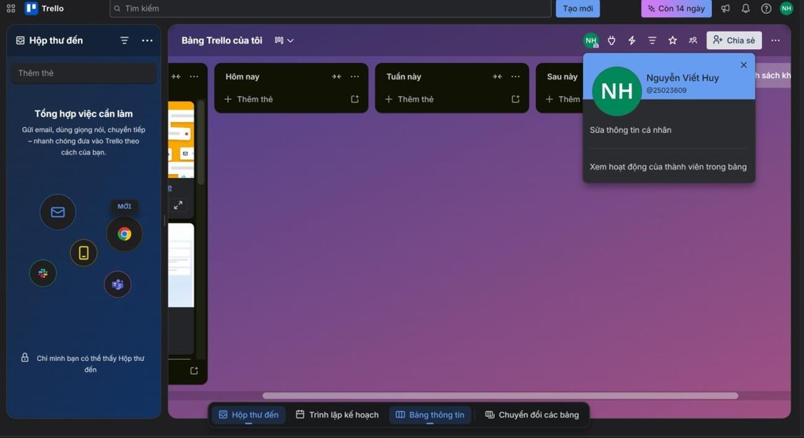
3. Quản lý tác vụ & Tương tác cá nhân
- Về quản lý tác vụ: Được phân công phụ trách bản vẽ khung xe và code logic cảm biến siêu âm, tôi liên tục cập nhật tiến độ trên Trello. Tần suất cập nhật của tôi duy trì ít nhất 3-4 lần/tuần. Khi vẽ xong bản nháp AutoCAD hoặc viết xong một hàm Python, tôi đều tick hoàn thành checklist và đính kèm file mới nhất lên thẻ.
- Về tương tác cá nhân: Trong server Discord của nhóm, tần suất tương tác của tôi đạt trên 10 lượt/tuần. Tôi chủ động:
- Gửi code snippet (đoạn code Python) lên kênh chat để nhờ các bạn kiểm tra thuật toán logic (ví dụ: vòng lặp while khi khoảng cách vật cản < 20cm).
- Hỗ trợ thành viên khác tính toán cơ sở vật lý (lực ma sát, công suất động cơ).
- Tham gia đầy đủ các buổi họp Voice hàng tuần để rà soát tiến độ.
4. Quản lý tài nguyên & Tệp tin
Do file .dwg (AutoCAD) rất nặng và các file .py (Python) cần quản lý phiên bản nghiêm ngặt, tôi đã thiết lập hệ thống Google Drive dùng chung vô cùng kỷ luật.
Hệ thống thư mục logic (Nhiều cấp):
- Dự án Robot_UET
01_Ban_ve_AutoCAD(Chứa khung gầm, vỏ robot)02_Code_Python_Logic(Chứa thuật toán di chuyển)03_Tai_lieu_Cam_bien(Datasheet của cảm biến, tài liệu tham khảo)04_Bao_cao_GoogleDocs
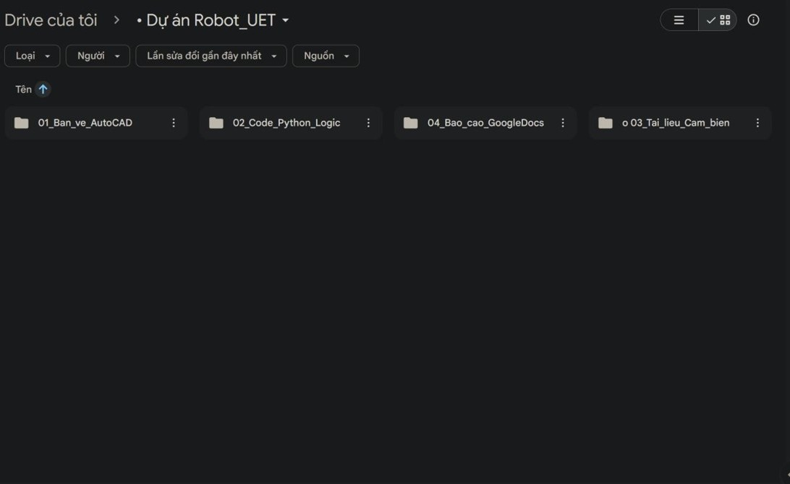
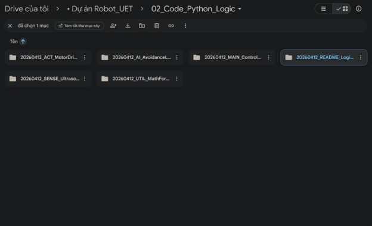
Thiết lập quyền truy cập: Tôi cài đặt quyền "Viewer" cho thư mục Tai_lieu_Cam_bien để tránh xóa nhầm datasheet, và cấp quyền "Editor" cho thư mục Bao_cao_GoogleDocs.
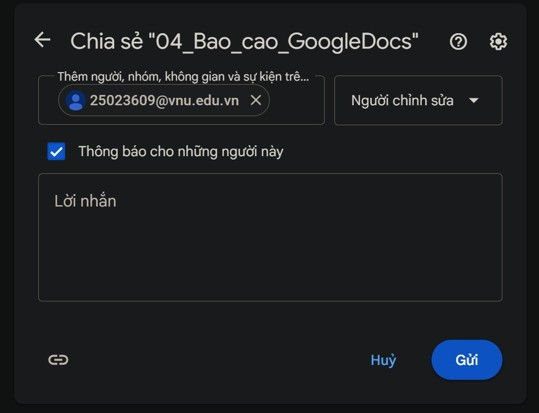
5. Phân tích hiệu quả, thách thức và giải pháp
5.1 Phân tích hiệu quả của công cụ
Trello giúp tôi theo dõi sát sao điểm nghẽn của dự án. Google Drive giải quyết triệt để vấn đề mất file hoặc nhầm lẫn giữa code cũ và code mới. Đặc biệt, Discord hỗ trợ gửi định dạng code rất trực quan, giúp việc review thuật toán AI trở nên dễ dàng hơn.
5.2 Ba thách thức gặp phải và Cách giải quyết
- Phân tích: Lúc đầu nhóm chỉ dùng 1 kênh chat chung, các tin nhắn báo cáo tiến độ và bàn luận thuật toán bị xen lẫn vào nhau rất khó tìm lại.
- Giải pháp: Tôi cấu trúc lại server Discord, tạo các kênh riêng biệt:
#hardware-autocad,#software-python,#general-chat. Tôi cũng dùng tính năng "Pin" để ghim các tài liệu API quan trọng.
- Phân tích: Khi ghép phần cơ cấu vật lý và mô tả thuật toán trên cùng 1 file Google Docs, các thành viên thường vô tình xóa/sửa nhầm định dạng của nhau.
- Giải pháp: Tôi yêu cầu mọi người sử dụng chế độ "Suggesting" (Đề xuất chỉnh sửa). Thay vì xóa thẳng, các thay đổi sẽ hiện dưới dạng góp ý. Nhóm trưởng sẽ là người review cuối cùng và ấn "Chấp nhận" (Tick) để tối ưu nội dung.
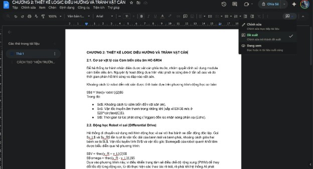
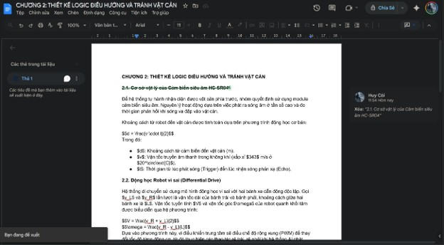
- Phân tích: Bạn phụ trách làm Slide không thể bắt đầu vì đợi tôi test xong thuật toán Python.
- Giải pháp: Tôi tạo một thẻ Trello tên là "Draft Code Logic" và gắn nhãn đỏ "BLOCKER". Tôi đẩy bản nháp thuật toán lên sớm 2 ngày kèm ảnh chụp màn hình terminal để bạn làm slide có tư liệu thiết kế trước.
6. Kết luận
Dự án "Mô phỏng Robot tự hành" không chỉ rèn luyện tư duy lập trình và thiết kế cơ khí mà còn là "thao trường" tuyệt vời để tôi thực hành kỹ năng làm việc nhóm trực tuyến. Việc áp dụng kỷ luật số đã giúp cá nhân tôi hoàn thành xuất sắc tiến độ và hỗ trợ nhóm đạt được mục tiêu chung của môn học một cách khoa học, hiện đại.
5 Ứng dụng công cụ AI tạo sinh trong sáng tạo nội dung số
Học phần: Nhập môn Công nghệ số
Chủ đề dự án: Thiết kế Infographic giới thiệu về Công nghệ Robot mềm (Soft Robotics) trong Y tế
Sinh viên thực hiện: Nguyễn Viết Huy
Mã sinh viên: 25023609
Lớp: K70 - Kỹ thuật Robot, Đại học Công nghệ (UET) - VNU
I. Giới thiệu dự án
1. Lý do chọn đề tài
Là một sinh viên ngành Kỹ thuật Robot, tôi nhận thấy Robot mềm (Soft Robotics) là một lĩnh vực mới đầy tiềm năng, thay thế các cấu trúc cứng nhắc bằng vật liệu đàn hồi để tương tác an toàn với con người. Dự án này nhằm tạo ra một sản phẩm truyền thông số (Infographic) để phổ biến kiến thức này đến cộng đồng sinh viên kỹ thuật.
2. Các công cụ Al sử dụng
Để hoàn thành dự án, tôi đã phối hợp sử dụng 3 công cụ Al tạo sinh thuộc 3 nhóm khác nhau:
- Google Gemini (Nhóm tạo văn bản): Sử dụng để nghiên cứu tài liệu, lên dàn ý chi tiết và biên soạn nội dung chuyên môn.
- Microsoft Designer/DALL-E 3 (Nhóm tạo hình ảnh): Sử dụng để tạo ra các concept hình ảnh minh họa cho các cấu trúc cơ cấu chấp hành (actuator) mềm mà thực tế khó chụp được.
- Canva Al - Magic Design (Nhóm hỗ trợ thiết kế): Sử dụng để tự động hóa bố cục Infographic và phối màu thông minh dựa trên nội dung có sẵn.
II. Chi tiết quá trình sử dụng Al và Nhật ký sáng tạo
1. Giai đoạn 1: Xây dựng nội dung với Google Gemini
- Prompt sử dụng: "Tôi là sinh viên ngành Kỹ thuật Robot. Hãy đóng vai một chuyên gia, giúp tôi lên dàn ý cho một Infographic về 'Robot mềm trong phẫu thuật'. Nội dung cần chia thành 4 phần: Định nghĩa, Ưu điểm so với robot cứng, Các vật liệu phổ biến (elastomer), và Tương lai ứng dụng. Yêu cầu ngôn ngữ chuyên môn nhưng cô đọng."
- Kết quả nhận được: Gemini đã cung cấp một cấu trúc logic với các thuật ngữ chính xác như 'Continuum robots', 'Bio-inspired design'.
- Sự chỉnh sửa và tích hợp cá nhân: Tôi nhận thấy nội dung Gemini đưa ra hơi thiên về lý thuyết. Tôi đã chủ động tra cứu thêm các nghiên cứu tại phòng Lab của UET để bổ sung phần ứng dụng thực tế và điều chỉnh lại các thông số lực ép của vật liệu để đảm bảo tính kỹ thuật chính xác. (Đóng góp cá nhân: 60%).
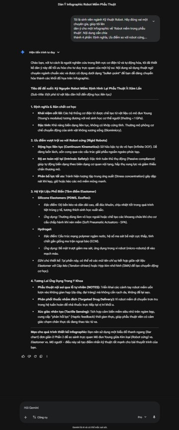
2. Giai đoạn 2: Sáng tạo hình ảnh minh họa với Chat GPT
- Prompt sử dụng: "A high-tech, realistic 3D render of a soft robotic gripper inspired by an elephant trunk, holding a delicate surgical needle, blue and white aesthetic, laboratory background, cinematic lighting."
- Quá trình điều chỉnh: Ban đầu Al tạo ra hình ảnh trông quá giống đồ chơi. Tôi đã phải bổ sung các từ khóa kỹ thuật như 'biomimetic', 'pneumatic networks' và 'macro photography' để có được hình ảnh chuyên nghiệp hơn.
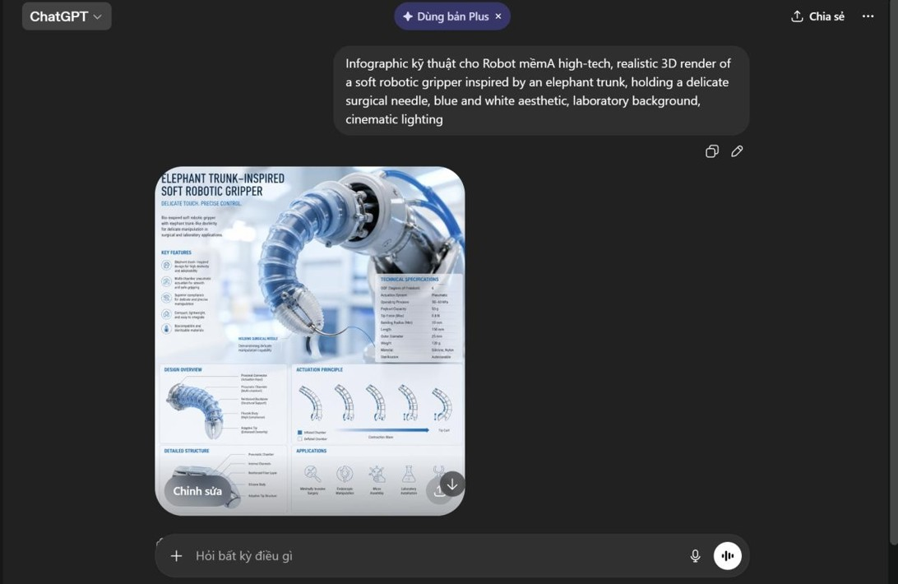
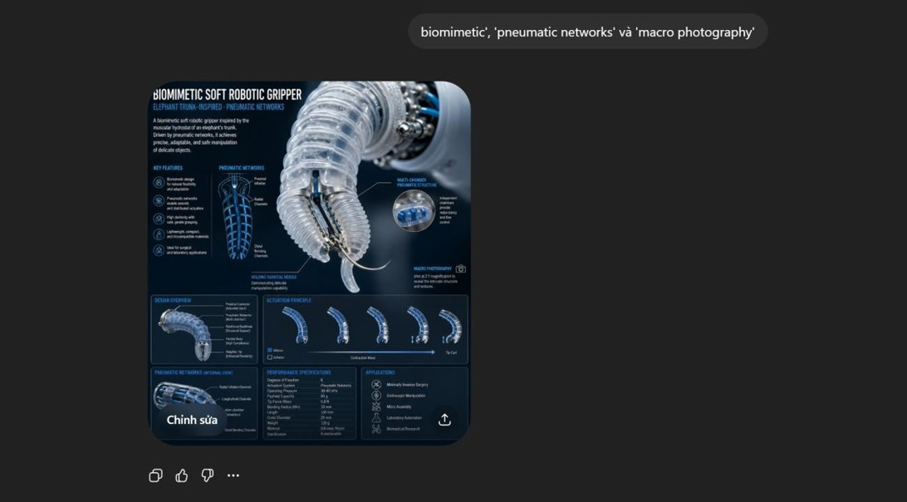
3. Giai đoạn 3: Thiết kế sản phẩm cuối cùng trên Canva Al
Tôi đã tải nội dung từ Gemini và hình ảnh từ GPT lên Canva. Sử dụng tính năng Magic Design, tôi nhập mô tả "Infographic kỹ thuật cho Robot mềm".
Sự can thiệp cá nhân: Al chỉ đưa ra khung cơ bản. Tôi đã tự tay sắp xếp lại thứ tự các khối thông tin theo luồng đọc của kỹ sư, thay đổi font chữ sang 'Roboto' để tạo cảm giác kỹ thuật, và thêm các biểu tượng (icons) về vi điều khiển Arduino để kết nối nội dung với thực tế học tập.
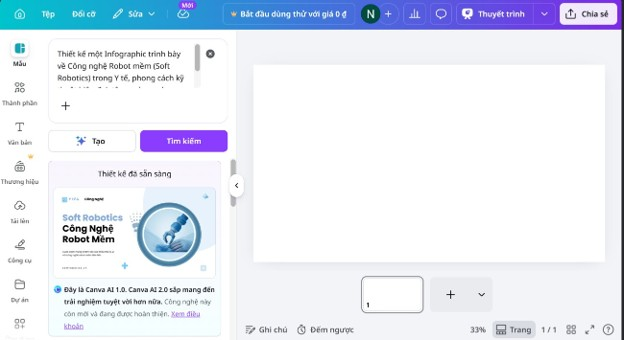
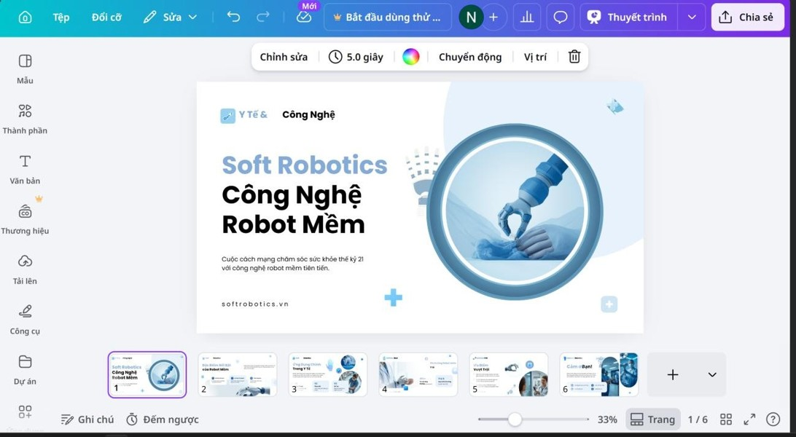
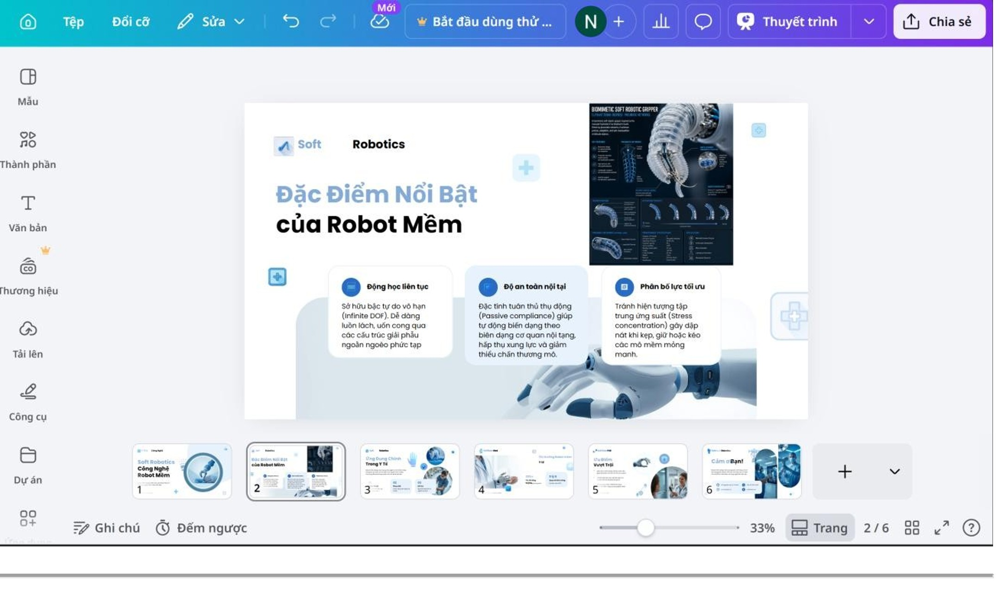
III. So sánh và phân tích hiệu quả công cụ
| Công cụ | Điểm mạnh | Điểm yếu / Hạn chế | Đánh giá hiệu quả |
|---|---|---|---|
| Google Gemini | Tư duy logic tốt, hiểu sâu các thuật ngữ kỹ thuật, tốc độ phản hồi nhanh. | Văn phong đôi khi còn cứng nhắc, cần kiểm chứng lại số liệu vì dễ bị "ảo giác". | 90% |
| GPT | Sáng tạo hình ảnh từ mô tả văn bản rất tốt, màu sắc chuyên nghiệp. | Khó tạo ra sơ đồ mạch điện chính xác tuyệt đối theo tiêu chuẩn kỹ thuật. | 85% |
| Canva Al | Tiết kiệm thời gian sắp xếp bố cục ban đầu, thư viện hình ảnh hỗ trợ phong phú. | Các mẫu thiết kế còn mang tính tổng quát, chưa chuyên sâu cho ngành robot. | 80% |
Phân tích sâu: Sự kết hợp giữa Gemini (não bộ nội dung) và Canva (cơ thể trình bày) tạo ra một quy trình làm việc khép kín. Tuy nhiên, vai trò của người kỹ sư là "trọng tài" để sàng lọc và điều chỉnh là quan trọng nhất để đảm bảo sản phẩm không bị hời hợt.
IV. Vai trò của Al và Vấn đề đạo đức trong sáng tạo
1. Sự thay đổi quy trình sáng tạo
Trước đây, để làm một Infographic, tôi mất khoảng 10 giờ. Nhờ Al, quy trình này rút ngắn xuống còn 4 giờ. Al không thay thế tôi sáng tạo, nó đóng vai trò là một "người cộng sự" cấp cao, lo liệu các công việc mang tính thực thi lặp lại để tôi tập trung vào tư duy chiến lược và kiểm định chuyên môn.
2. Vấn đề đạo đức và trách nhiệm
Việc sử dụng Al trong môi trường học thuật đòi hỏi sự minh bạch tuyệt đối. Tôi nhận thức rõ các vấn đề về:
- Bản quyền: Hình ảnh do Al tạo ra dựa trên dữ liệu khổng lồ, do đó không nên coi đó là tài sản độc quyền hoàn toàn.
- Tính chính xác: Trong ngành Robot, một sai sót nhỏ trong thông số có thể dẫn đến hậu quả lớn. Sự phụ thuộc quá mức vào Al mà thiếu kiểm chứng thực tế là một rủi ro đạo đức nghề nghiệp.
- Liêm chính: Tôi cam kết khai báo đầy đủ các phần có sự hỗ trợ của Al và đảm bảo giá trị cốt lõi của bài báo cáo vẫn nằm ở tư duy phân tích của bản thân.
V. Kết luận
Dự án đã giúp tôi làm chủ được các công cụ Al hiện đại, đồng thời củng cố kiến thức chuyên ngành về Soft Robotics. Để đạt được điểm tối đa, tôi hiểu rằng công nghệ chỉ là công cụ, còn sự tỉ mỉ và dấu ấn cá nhân mới là yếu tố quyết định giá trị của một kỹ sư.
6 Sử dụng AI có trách nhiệm trong học tập và nghiên cứu (Đạo đức học thuật)
Họ và tên: Nguyễn Viết Huy
Ngành: Kỹ thuật Robot - Đại học Công nghệ (UET), ĐHQGHN
I. Nghiên cứu chính sách về việc sử dụng AI trong học tập và nghiên cứu
1. Đánh giá chính sách tại trường đang theo học (UET - ĐHQGHN)
Hiện tại, Đại học Công nghệ (UET) cũng như Đại học Quốc gia Hà Nội nói chung đang quản lý việc sử dụng AI chủ yếu thông qua lăng kính của các Quy định về Liêm chính học thuật và Quy chế đào tạo. Mặc dù chưa có một bộ luật độc lập và chi tiết quy định từng ranh giới cụ thể dành riêng cho Generative AI (AI tạo sinh), các hành vi như sao chép toàn bộ kết quả của AI đưa vào báo cáo môn học, đồ án mà không trích dẫn đều bị xếp vào dạng đạo văn và gian lận kết quả nghiên cứu.
2. So sánh với các cơ sở giáo dục khác
Khi đối chiếu với chính sách của một số trường đại học quốc tế hoặc các trường như RMIT Việt Nam, có thể thấy một sự khác biệt rõ rệt về mức độ chi tiết. Tại RMIT, sinh viên được cung cấp hướng dẫn rõ ràng về việc AI được phép sử dụng ở những khâu nào (như tìm kiếm ý tưởng, tóm tắt tài liệu, kiểm tra ngữ pháp) và nghiêm cấm sử dụng AI để trực tiếp tạo ra sản phẩm đánh giá cuối cùng. Họ cũng yêu cầu hình thức trích dẫn (APA/Harvard) cụ thể cho các công cụ AI.
3. Nhận định cá nhân
Việc thiếu vắng một bộ quy tắc chi tiết, mang tính hệ thống dành riêng cho AI tại trường là một rào cản, khiến sinh viên đôi khi hoang mang giữa việc "sử dụng công cụ hỗ trợ" và "vi phạm quy chế". Trong bối cảnh công nghệ thay đổi từng ngày, nhà trường cần sớm ban hành các khung hướng dẫn cụ thể, vừa khuyến khích sinh viên ngành kỹ thuật làm chủ công cụ mới, vừa bảo vệ tính minh bạch của môi trường học thuật.
II. Thực hiện nhiệm vụ học tập với sự hỗ trợ của AI
- 1. Mô tả nhiệm vụ: Tìm hiểu nguyên lý hoạt động của cấu trúc cơ cấu chấp hành khí nén mềm (Soft Pneumatic Actuators) và lên khung mã code cơ bản trên vi điều khiển Arduino Uno R3 để phục vụ cho báo cáo môn học.
- 2. Quá trình sử dụng AI:
Prompt đã sử dụng: "Đóng vai là một kỹ sư robot, hãy giải thích ngắn gọn nguyên lý hoạt động của Soft Pneumatic Actuators trong 3 câu. Sau đó, viết một đoạn code C++ cơ bản cho Arduino Uno R3 để điều khiển bật/tắt một van khí nén (giả sử nối với chân số 8) theo chu kỳ 2 giây."
Đầu ra của AI: AI đã cung cấp một đoạn giải thích chính xác về việc sử dụng áp suất khí nén để làm biến dạng vật liệu đàn hồi (như silicone), tạo ra chuyển động uốn cong hoặc co giãn. Đi kèm là đoạn code Arduino sử dụng hàm
pinMode(8, OUTPUT);vàdigitalWrite()kết hợp với hàmdelay(2000);. - 3. Cách đánh giá, chỉnh sửa và tích hợp đầu ra của AI:
- Đánh giá: Phần lý thuyết AI đưa ra khái quát và dễ hiểu, phù hợp để làm phần mở đầu báo cáo. Tuy nhiên, phần code Arduino dùng hàm
delay()là một cách lập trình chưa tối ưu trong thực tế vì nó sẽ chặn (block) toàn bộ hệ thống, khiến vi điều khiển không thể đọc các cảm biến khác trong lúc chờ. - Chỉnh sửa: Tôi đã giữ lại ý tưởng cốt lõi của phần lý thuyết, đối chiếu lại với giáo trình chuyên ngành và diễn đạt lại bằng ngôn ngữ của mình. Với phần code, tôi không dùng nguyên bản của AI mà tự viết lại, thay thế hàm
delay()bằng hàmmillis()để tối ưu hóa khả năng đa nhiệm của bo mạch. - Tích hợp: Thông tin được đưa vào báo cáo như một cơ sở tham khảo ban đầu để định hướng các bước thiết kế phần cứng tiếp theo.
- Đánh giá: Phần lý thuyết AI đưa ra khái quát và dễ hiểu, phù hợp để làm phần mở đầu báo cáo. Tuy nhiên, phần code Arduino dùng hàm
- 4. Trích dẫn việc sử dụng AI (Theo chuẩn APA): Gemini pro.
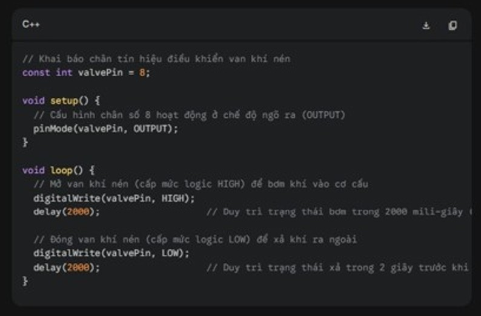
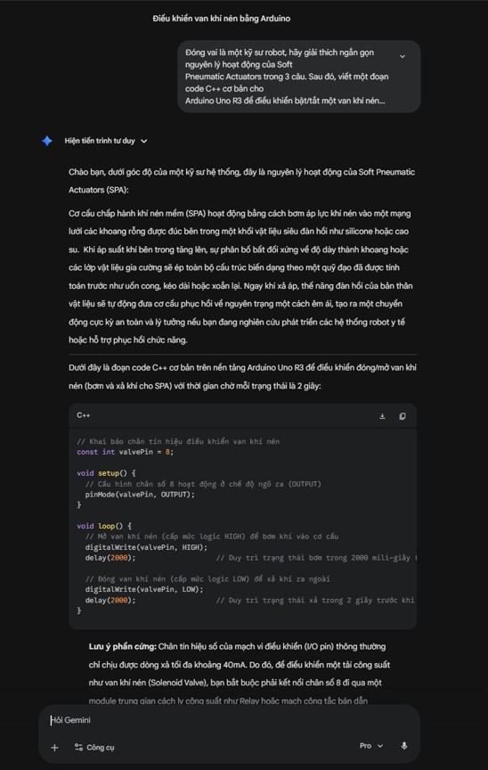
III. Phân tích các vấn đề đạo đức liên quan đến sử dụng AI
- Hỗ trợ hợp lý: Sử dụng AI như một công cụ tối ưu hóa hiệu suất (ví dụ: gỡ lỗi cú pháp khi thao tác trên AutoCAD, kiểm tra lại các bước biến đổi công thức trong Giải tích/Vật lý đại cương, hoặc tìm kiếm tài liệu tham khảo).
- Gian lận học thuật: Yêu cầu AI làm toàn bộ bài tập lớn, giải hộ các bài toán cốt lõi hoặc viết toàn bộ báo cáo rồi nộp dưới tên mình. Hành động này qua mặt quy trình đánh giá năng lực thực chất của giảng viên.
Các mô hình AI được huấn luyện dựa trên hàng tỷ điểm dữ liệu từ internet, bao gồm cả các tài liệu có bản quyền, chất xám của các nhà nghiên cứu đi trước. Khi sinh viên sử dụng câu chữ của AI mà không trích dẫn, bản chất là đang chiếm đoạt các nguồn dữ liệu gốc đó mà không ghi nhận công lao của tác giả, vi phạm nghiêm trọng đạo đức nghiên cứu.
Đây là tác động nguy hiểm nhất. Việc lạm dụng AI để giải quyết các vấn đề khó khăn sẽ tạo ra thói quen ỷ lại. Đối với một kỹ sư trong tương lai, nếu bỏ qua quá trình tự vật lộn với các môn khoa học cơ bản, sinh viên sẽ mất đi tư duy phản biện (critical thinking) và khả năng giải quyết vấn đề (problem-solving) từ gốc rễ. Khi gặp phải một bài toán kỹ thuật mới chưa từng có trên internet, một kỹ sư phụ thuộc vào AI sẽ hoàn toàn mất khả năng xử lý.
IV. Bộ nguyên tắc cá nhân về cách sử dụng AI có trách nhiệm (6 Nguyên tắc)
Dựa trên quá trình học tập và quan điểm cá nhân, tôi xây dựng bộ 6 nguyên tắc sau:
- 1. Chủ động Tư duy (Ownership): AI chỉ là công cụ gợi ý, người đưa ra quyết định cuối cùng và chịu trách nhiệm cho độ chính xác của đồ án, bản vẽ hay dòng code phải là chính tôi.
- 2. Xác thực thông tin (Verification): Luôn coi dữ liệu AI đưa ra là "bản nháp cần kiểm chứng". Mọi số liệu kỹ thuật, thông số vật lý đều phải đối chiếu chéo (cross-check) với các tài liệu chính thống, sách giáo khoa hoặc datasheet của linh kiện.
- 3. Minh bạch trong Trích dẫn (Transparency): Bất kỳ phần ý tưởng hoặc đoạn văn bản nào mượn từ AI đều phải được khai báo rõ ràng và trích dẫn đúng chuẩn trong các báo cáo nhóm.
- 4. Bảo vệ Dữ liệu (Data Privacy): Tuyệt đối không nhập các thông tin nhạy cảm cá nhân, dữ liệu bản quyền, nội dung của các dự án nhóm đang trong vòng bảo mật lên các nền tảng AI công cộng.
- 5. Nâng cấp bản thân, không Thay thế bản thân (Augmentation, not Replacement): Sử dụng AI để mở rộng kiến thức, tiết kiệm thời gian làm các tác vụ lặp đi lặp lại, thay vì dùng nó để trốn tránh việc học các kiến thức nền tảng.
- 6. Tôn trọng bản quyền (Respect IP): Không sử dụng các công cụ AI nhằm mục đích tẩy xóa watermark bản quyền, hoặc cố tình xáo trộn câu chữ để lách qua các phần mềm kiểm tra đạo văn (như Turnitin/DoIT).
V. Infographic minh họa
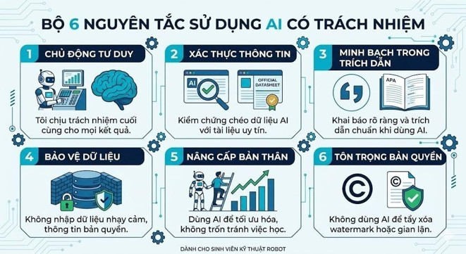
Tổng kết & Đánh giá bản thân
6
Nhiệm vụ hoàn thành
12
Tuần học tập
7+
Công cụ số thành thạo
Trải nghiệm & Cảm nhận cá nhân
Thông qua các học phần về Prompt Engineering (Bài 3) và Sáng tạo nội dung (Bài 5), tư duy tiếp cận công nghệ của tôi đã hoàn toàn thay đổi. Tôi thấm thía một quy luật: "Giới hạn của AI chính là giới hạn trong tư duy khai thác của người dùng". Thành quả rõ rệt nhất là việc tối ưu hóa hiệu suất, rút ngắn thời gian xử lý công việc từ 5 giờ xuống chỉ còn 2 giờ nhờ tích hợp đồng bộ ChatGPT, Gemini và Canva AI. Đây không chỉ là sự tiện lợi của công cụ, mà là minh chứng sắc nét cho sức mạnh của tư duy hệ thống.
Khó khăn lớn nhất đã vượt qua
Thách thức lớn nhất không nằm ở công nghệ, mà ở việc thiết lập trật tự từ sự hỗn loạn trong làm việc nhóm (Bài 4). Quá trình chuẩn hóa Naming Convention, triển khai hệ thống Kanban (Trello) và xây dựng luồng làm việc bất đồng bộ là một phép thử khắc nghiệt. Nó vượt xa một bài toán kỹ thuật thông thường để trở thành một trải nghiệm thực tế về năng lực quản trị: làm sao để thuyết phục, gắn kết và đồng bộ hóa thói quen của một tập thể mang nhiều cá tính khác biệt.
Bước chuyển mình về nhận thức
Bước ngoặt lớn nhất là việc phá bỏ định kiến xem AI như một "cỗ máy làm hộ". Giờ đây, tôi định vị AI là một cộng sự chiến lược—nơi máy móc đảm nhiệm khối lượng xử lý, còn con người nắm giữ tư duy điều hướng và bộ lọc kiểm chứng cuối cùng. Trải nghiệm này dạy tôi rằng, đỉnh cao của việc làm chủ công nghệ không chỉ là biết cách dùng AI hiệu quả, mà là bản lĩnh nhận định được khi nào tuyệt đối KHÔNG NÊN lạm dụng nó.